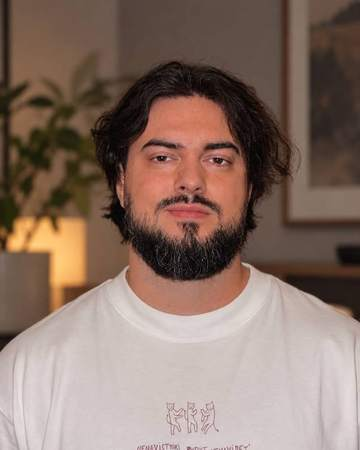

Место, где можно не торопиться
Я психолог и гештальт-терапевт. Работаю со взрослыми онлайн: с трудностями в отношениях, зависимостями, кризисами и горем.
Написать в TelegramНаписать в MAXС чем ко мне приходят
- Отношения
- Повторяющиеся сценарии, конфликты, одиночество в паре, расставания, трудности с близостью.
- Эмоциональные зависимости
- Когда любовь, секс, деньги или потребность всё контролировать начинают управлять жизнью.
- Кризисы
- Ситуативные: потеря работы, развод, переезд. И экзистенциальные, когда теряются смысл и опора.
- Утрата и горе
- Острое и затянувшееся горе после смерти близкого, расставания или другой большой потери.
Как я работаю
Мне важен живой и бережный контакт. Я не тороплю и не спешу «исправить» ваше состояние. Вместе мы замечаем, что происходит с вами здесь и сейчас: что вы чувствуете, чего хотите и как сами себя останавливаете. Из этого внимания обычно и появляется опора для изменений.
Я спокойно выдерживаю сильные чувства: горе, злость, тревогу, стыд. И помогаю вам тоже их выдерживать, а не отрезать от себя.
Регулярно хожу на супервизию и в личную терапию. Если вашему запросу нужен психиатр или другой специалист, скажу об этом прямо и помогу найти помощь.

Образование
- Профессиональная переподготовка «Психолог, преподаватель психологии», 1500 часов. Институт имени Б. Д. Карвасарского, Санкт-Петербург.
- Программа подготовки гештальт-терапевтов Московского Гештальт Института, с 2021 года: две ступени, 600 часов теории, практики и супервизии.
- 160 часов личной терапии, регулярная супервизия.
Форматы и стоимость
| Индивидуальная терапияОнлайн, 55 минут | 4 000 ₽ |
|---|---|
| Терапия для пары или семьиОнлайн, 90 минут | 6 000 ₽ |
| Терапевтическая группаО наборе пишу в Telegram-канале | по набору |
Встречи проходят по видеосвязи, обычно раз в неделю. Всё, что вы рассказываете, остаётся между нами.
Как записаться
- Напишите мне в Telegram пару слов о том, с чем хотите прийти.
- Договоримся о времени первой встречи.
- На первой встрече познакомимся, обсудим ваш запрос и решим, как будем работать дальше.
Перед началом работы мы подписываем контракт на терапию и согласие на обработку персональных данных. Их можно прочитать заранее.
Я не оказываю экстренную помощь. Если вам сейчас очень плохо или вы опасаетесь за свою жизнь, звоните 112.